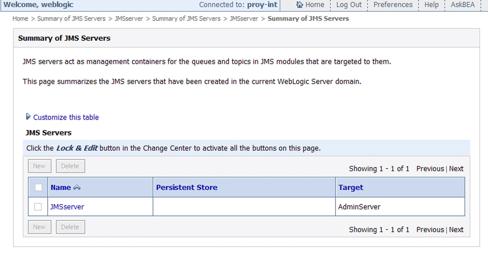
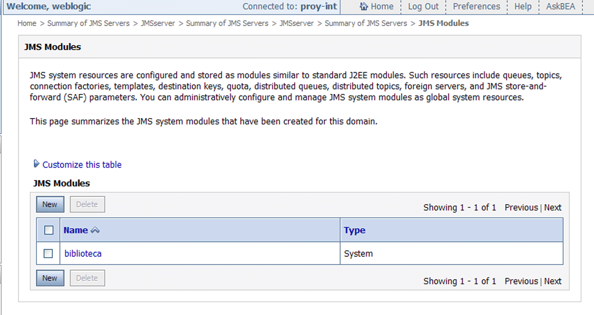
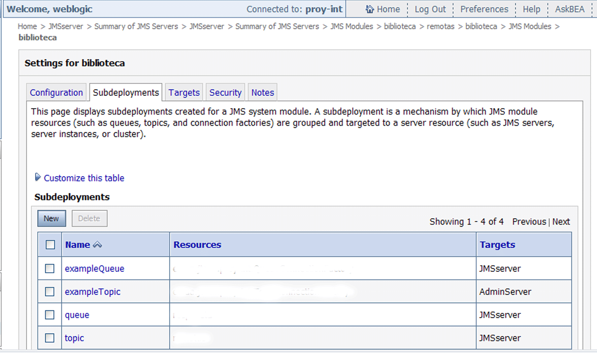
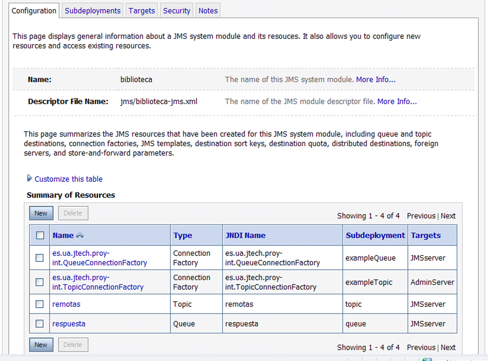
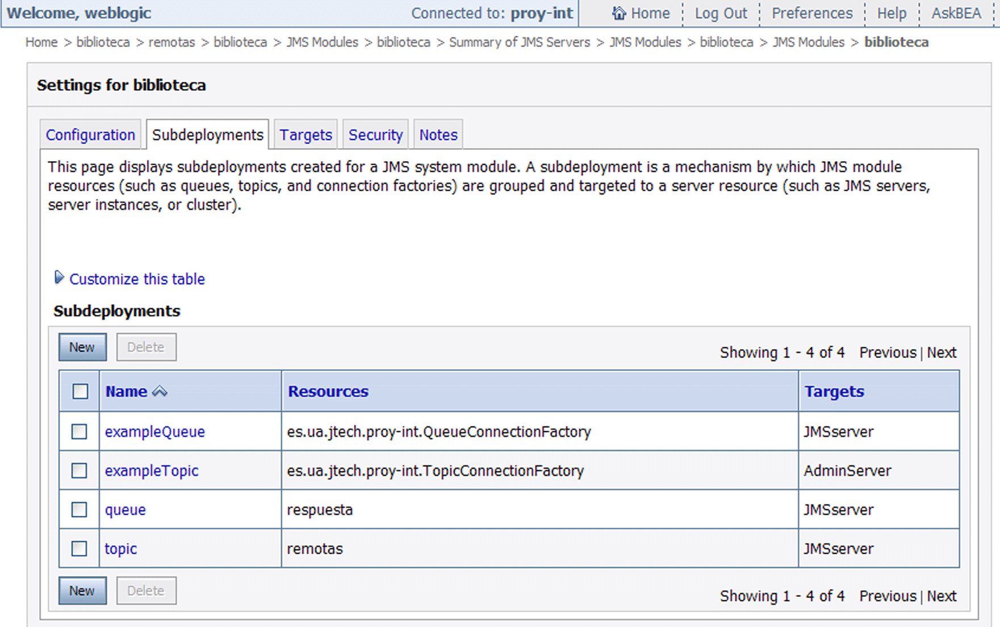

Mensajes: JMS
Introducción
El objetivo de esta sesión es aportar una nueva funcionalidad. Se trata de que una biblioteca externa, representada por un cliente JMS, realice un préstamo a la nuestra, a través de un MDB (Bean de Mensajes). La biblioteca externa indica el ISBN del libro a pedir prestado y nuestra biblioteca, realiza el préstamo y le envía la ficha completa del libro (ISBN, Titulo, Autor, y Número de Páginas). A grandes rasgos, el protocolo de comunicación y lógica de negocio son los siguientes:
1. El cliente publicará su mensaje de texto con el ISBN en el tópico remotas y quedará a la espera de la recepción de la ficha del libro en la cola respuesta.
2. El MDB escuchará el tópico remotas. A la recepción del mensaje realizará el préstamo a través de una OperacionLocal, esto es del EJB OperacionBean. Después, MDB se las arreglará para obtener los datos completos del libro, construirá un MapMessage y lo enviará a la cola respuesta.
3. El cliente recibirá de la cola respuesta los datos completos del libro y los mostrará en pantalla.
Actualización del dominio para soporte de JMS
Como ya vimos en uno de los ejericicios del módulo de JMS, lo primero es configurar adecuadamente nuestro dominio proy-int. Por eso lo arrancaremos y entraremos en la consola de administración. Los pasos a seguir son :
1. Crear servidor JMS. En Services-& Messaging clickear JMS Servers. Como la tabla estará vacía, entonces Lock and Edit y añadir una nueva entrada a la tabla. En el nombre, poned JMSserver. Clickear en Next y poner como target a AdminServer (el nombre que le habeis dado a vuestro servidor de administración). Clickear en Finish y luego gabar y activar cambios. Os deberá aparecer:

2. Crear el módulo JMS. En Services-& Messaging clickear JMS Modules. La tabla correspondiente estará vacía. Procediendo de manera similar al paso anterior, deberemos darle el nombre de biblioteca y clickeando Next darle como Target el AdminServer. Una vez activados los cambios tendremos:

3. Subdeployments del módulo JMS. Teniendo en cuenta que vamos a tener que administrar un tópico y una cola, en realidad los recursos JMS administrados serán 4 teniendo en cuenta las factorías de conexión. Por ello, antes de crear estos recursos, clickearemos en el módulo biblioteca, que acabamos de crear, el tab Subdeployments.
Para albergar las factorías de conexión crearemos los siguientes:
- exampleTopic para la es.ua.jtech.proy-int.TopicConnectionFactory
- exampleQueue para es.ua.jtech.proy-int.QueueConnectionFactory
Estas factorías se crearán más tarde y es entonces cuando se asociarán a sus subdeployments.
Por otro albergar el tópico y la cola (que también se crearán más tarde):
- topic para el remotas
- queue para la respuesta
Cuando se crea un subdeployment solamente se pregunta el Target. Asociad los subdeployments de las factorías a AdminServer y los de las colas a JMSserver. Tras activar cambios tendremos una tabla como la siguiente:

donde, como vemos, los recursos nombrados todavía no están asociados.
4. Creación de los recursos administrados. Lo siguiente es clickear en biblioteca para crear los 4 recursos administrados. Cuando se crea uno de estos recursos te preguntan si es cola, tópico, factoría de conexión. Se elige la opción adecuada en cada caso y luego te preguntan el nombre JNDI. Finalmente preguntan el Subdeployment y el Target ya aparece implícito. Poned lo que aparece en esta tabla, que deberá ser el resultado final:

Activad cambios. Si creais estos recursos antes del subdeployment os dará error. Si todo va bien, el el tab de Subdeployments veremos la asociación de recursos:

Desarrollo: recomendaciones generales
Para desarrollar el cliente y el MDB es aconsejable que tomeis como punto de partida el código java del ejemplo visto en la Sesion 3 del módulo de JMS correspondiente a la sección Message-Driven Beans.
En el proyecto, el cliente, que renombrareis como ClienteBiblioteca.java se ubicará en proy-int-cliente junto con el ClienteOperacion.java desarrollado en la parte EJB. Como nuestro cliente usa funcionalidades de JMS habrá que incluir weblogic.jar en el Build Path del proy-int-cliente.
En cuanto al MDB, lo ubicareis en proy-int-ejb en el package es.ua.jtech.proyint.beans, junto con, p.e. OperacionBean.java
Con estas recomendaciones básicas podeis empezar a trabajar ya que el cliente envía un mensaje de texto y el MDB lo recoge e imprime (mirad la impresión en la ventana donde está corriendo el servidor). Este primer paso implica especificar al menos el nombre JNDI de la factoría para el tópico remotas y el propio tópico tanto en el cliente como en el MDB. Así que una primera indicación de que todo marcha bien es pedirle al usuario un ISBN desde teclado, construir el mensaje de texto y ver que el cliente lo envia y el MDB lo recibe y lo imprime.
Desarrollo en el MDB
El MDB que tomamos como punto de partida, MessageTraderBean.java (renombradlo a BeanMensajes.java) hace poca cosa, se limita en su método onMessage() a recibir e imprimir un mensaje de texto. Pero sabemos que desde ese método puede implementar más lógica de negocio. Concretamente lo primero que le vamos a pedir es que realice el prestamo.
Teniendo el cuenta la advertencia anterior, para realizar el préstamo, primero habrá que obtener el EJB
// Primero obtener el EJB
OperacionLocal operacionEJB;
try {
Context jndiContext = new InitialContext();
OperacionLocalHome home = (OperacionLocalHome)
jndiContext.lookup("OperacionBeanLocal");
operacionEJB = (OperacionLocal) home.create();
} catch (Exception e) {
throw new RuntimeException("Error al obtener el EJB", e);
}
y luego realizar la operación de prestamo llamando al método operacionEJB.realizaPrestamo() con el nombre del usuario fictício y el isbn. Esta operación devuelve un String que codifica un identificador de operación (ved en la herramienta de administración de SQL que la tabla de operaciones ha sido actualizada convenientemente).
El siguiente paso es conseguir los datos del libro. La lógica de negocio implementada por OperacionBean no contempla acceder a los datos del libro por lo que una solución sencilla es usar código de operación, ya que ese EJB si tiene la funcionalidad listadoPrestamos() que devuelve una lista de OperacionTO. Allí podeis acceder a la operación identificada por vuestro código y de ahí podeis sacar un objeto LibroTO correspondiente a ese código.
Lo siguiente es crear el contexto para la cola respuesta y todos los objetos JMS necesarios, hasta llegar a un QueueSender, para enviar un mensaje MAP. Para construir dicho mensaje estableceremos las propiedades y sus valores, sacados del objeto LibroTO. Algo así como:
MapMessage msg_r = (MapMessage) qsession.createMapMessage();
msg_r.setStringProperty("isbn", r_isbn);
msg_r.setStringProperty("titulo", r_titulo);
msg_r.setStringProperty("autor", r_autor);
msg_r.setIntProperty("numpaginas", r_numpaginas);
después solo resta enviar el mensaje y cerrar los objetos JMS.
Desarrollo en el cliente JMS
Es aconsejable que desde el método main se llame a un método distinto para enviar y para recibir. Dentro de cada uno de estos métodos se encapsula la funcionalidad de envío o recepción (crear los objetos JMS, etc). El de envío ya está prácticamente codificado. En cuanto al de recepción, de nuevo hay que tener en cuenta que se trata de un mensaje MAP del que extraeremos los valores de las propiedades una vez recibido el mensaje por el QueueReceiver correspondiente:
//Mensaje MAP recibido. Extraemos las propiedades
MapMessage resp = (MapMessage) receiver.receive();
String isbn = resp.getStringProperty("isbn");
String titulo = resp.getStringProperty("titulo");
String autor = resp.getStringProperty("autor");
int numpaginas = resp.getIntProperty("numpaginas");
A Entregar
Tal como hemos especificado al principio hay que entregar el espacio de trabajo del proyecto de integración conteniendo el cliente y el MDB. Además hay que entregar el fichero config.xml del dominio.
El trabajo a realizar se debe efectuar durante la sesión actual, por lo cual no debería ser necesario emplear tiempo extra. De todos modos, el plazo final de entrega será 2 días antes de la próxima sesión de integración.